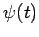
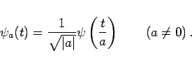
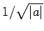
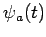
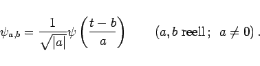
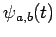
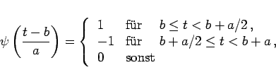

Zu einem Wavelet  kann man mit Hilfe eines Parameters a eine ganze Schar von Funktionen bilden:
|  | (15.148) |
Im Falle | a | >0 wird die Ausgangsfunktion gestaucht. Im Falle a<0 wird zusätzlich eine Spiegelung vorgenommen. Der Faktor  ist ein Skalierungsfaktor.
Mit Hilfe eines zweiten Parameters b können die Funktionen  noch verschoben werden. Man erhält dann die zweiparametrige Kurvenschar
|  | (15.149) |
Der reelle Verschiebunbgsparameter b charakterisiert den Zeitpunkt (bzw. den Ort), während der Parameter a die Ausdehnung der Funktion  angibt. Die Funktion wird im Zusammenhang mit der Wavelet-Transformation als Basisfunktion bezeichnet.
Die Wavelet-Transformation einer Funktion f(t) ist wie folgt definiert:
Für die Rücktransformation gilt:
Dabei ist c eine Konstante, die vom speziellen Wavelet  abhängt.
abhängt.
| Beispiel |
|
Unter Verwendung des HAAR-Wavelets (15.143) erhält man 
|
d.h. die verschiedenen Basisfunktionen ergeben sich aus einem Wavelet durch Verdoppeln oder Halbieren der Breite und durch Verschieben um ganzzahlige Vielfache der Breite.